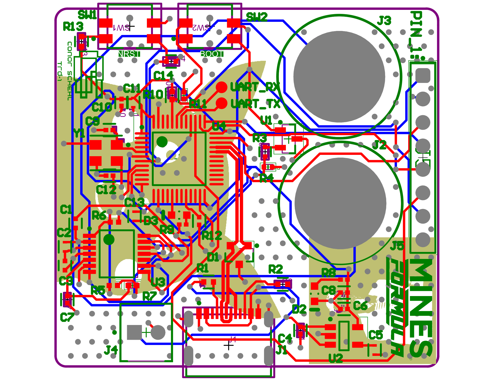

Dual-Stage Thermocouple DAQ
My first custom mixed-signal board, used for high-precision temperature measurement
The Objective
On the Mines Formula SAE team, we do everything custom. This includes custom carbon fiber ovens. This 2-layer PCB is a highly accurate analog front-end board for temperature sensing of said ovens. It conditions microvolt-level thermocouple signals, providing a robust, stable voltage to the STM32 MCU to collect, store, and relay the data. This was the first board I made, which was also super exciting.
System Architecture
In the analog domain, the foundation of the architecture is the INA2332 dual-stage instrumentation amplifier. Cold Junction Compensation (CJC) is achieved using an MCP9700 analog temperature sensor IC. The conditioned signal is then digitized by the STM32.
Design Rationale & Challenges
Thermocouple signals are highly susceptible to electromagnetic interference. The biggest challenge for this board despite having a sensitive USB 2.0 differential pair signal, was protecting the fragile thermocouple signal path. Any noise picked up in the path is filtered using a capacitive network before the first amplifier stage.
Instead of using software offsets, the design uses the MCP9700 to get an ambient temperature reference. This voltage is then scaled with a resistor divider and injected into the INA’s feedback network, applying CJC at the hardware level. After the first stage, the signal passes through heavy (200kΩ/22µF) low-pass filtering to eliminate low-frequency noise. Because the filter is at such high impedance, the signal is then amplified through the second stage of the INA in order to prevent the signal from collapsing under the STM32’s ADC load. The second stage of the INA acts as an isolation buffer to drive the ADC.
Outcome & Validation
Granted this was my first board, there were lots of mistakes along the way and lots of input and reviews from senior members. Even with all the review, the legacy style INA and schematic proved to be quite confusing and there are improvements on the amplification input stage to be made, especially with the capacitor network and biasing of the amplifier. From my understanding, a broad simplification of the issues is that the input capacitors are incorrectly tied to separate voltage references. This means the ripple and noise is different on each line ruining the common mode rejection ratio. Furthermore, the inputs aren’t connected to ground through a pulldown, so the bias return path is floating when the capacitors fully charge. Otherwise, the CJC and filtering designs prove to prevent external EMI from entering the temperature measurement and provide an accurate temperature to the STM32 to be interpreted without complicated software-level smoothing.
Technical Specifications
- Core Component: INA2332 (Dual-Stage Instrumentation Amplifier)
- Architecture: 2-layer mixed-signal with cold junction compensation
- Interfaces: USB 2.0, UART, Thermocouple
- Tools Used: Altium Designer, JLCPCB, STM32CubeMX, SolidWorks
Amplification Input Stage

Click to view full resolution
MCU

Click to view full resolution
Board Routing

Click to view full resolution
Interactive PCB Hardware
Click, drag, and zoom, or tap, two finger drag, and pinch (mobile)
to inspect board routing and component placement